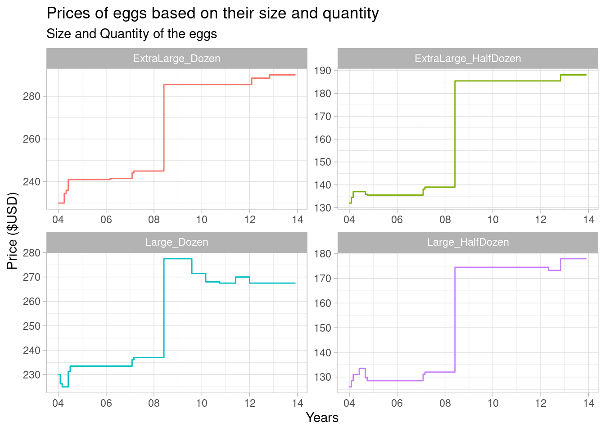

library(tidyverse)
library(ggplot2)
library(readxl)
library(my)Error in library(my): there is no package called 'my'knitr::opts_chunk$set(echo = TRUE, warning=FALSE, message=FALSE)Yoshita Varma Annam
January 13, 2023
Error in library(my): there is no package called 'my'Today’s challenge is to:
R Graph Gallery is a good starting point for thinking about what information is conveyed in standard graph types, and includes example R code. And anyone not familiar with Edward Tufte should check out his fantastic books and courses on data visualizaton.
(be sure to only include the category tags for the data you use!)
Read in one (or more) of the following datasets, using the correct R package and command.
# A tibble: 120 × 6
month year large_half_dozen large_dozen extra_large_half_dozen extra_l…¹
<chr> <dbl> <dbl> <dbl> <dbl> <dbl>
1 January 2004 126 230 132 230
2 February 2004 128. 226. 134. 230
3 March 2004 131 225 137 230
4 April 2004 131 225 137 234.
5 May 2004 131 225 137 236
6 June 2004 134. 231. 137 241
7 July 2004 134. 234. 137 241
8 August 2004 134. 234. 137 241
9 September 2004 130. 234. 136. 241
10 October 2004 128. 234. 136. 241
# … with 110 more rows, and abbreviated variable name ¹extra_large_dozen month year large_half_dozen large_dozen
Length:120 Min. :2004 Min. :126.0 Min. :225.0
Class :character 1st Qu.:2006 1st Qu.:129.4 1st Qu.:233.5
Mode :character Median :2008 Median :174.5 Median :267.5
Mean :2008 Mean :155.2 Mean :254.2
3rd Qu.:2011 3rd Qu.:174.5 3rd Qu.:268.0
Max. :2013 Max. :178.0 Max. :277.5
extra_large_half_dozen extra_large_dozen
Min. :132.0 Min. :230.0
1st Qu.:135.8 1st Qu.:241.5
Median :185.5 Median :285.5
Mean :164.2 Mean :266.8
3rd Qu.:185.5 3rd Qu.:285.5
Max. :188.1 Max. :290.0 Egg data has 120 rows and 6 columns where it explain the purchase price of the eggs for different sizes. From the summary it is observed that data is dated from the year 2004 to 2013. Here in the columns large_half_dozen mean size of the eggs is large and price is given only for half dozen. As it can be observed as a single column for one size and one quantity. To tidy this I have choose to store the size and quantities separately. In that way it will be easy to store the analyze the prices for different sizes over the years. And can predicting the price based on the quantity will be easy.
The data looks tidy already just modifying the data as mentioned above.To pivot the chosen data I have renamed columns names of large_half_dozen, large_dozen, extra_large_half_dozen, and extra_large_dozen to Large_HalfDozen, Large_Dozen ExtraLarge_HalfDozen, and ExtraLarge_Dozen. This way it will be easy to acess the dataset and pivot it appropriately. Also, in future it will be easy to read the data and group based on monthb and year.
eggs_longer <- eggs2%>%
pivot_longer(cols=contains("large"),
names_to = c("size_quantity_eggs"),
values_to = "price_of_the_eggs"
)
eggs_longer# A tibble: 480 × 4
month year size_quantity_eggs price_of_the_eggs
<chr> <dbl> <chr> <dbl>
1 January 2004 Large_HalfDozen 126
2 January 2004 Large_Dozen 230
3 January 2004 ExtraLarge_HalfDozen 132
4 January 2004 ExtraLarge_Dozen 230
5 February 2004 Large_HalfDozen 128.
6 February 2004 Large_Dozen 226.
7 February 2004 ExtraLarge_HalfDozen 134.
8 February 2004 ExtraLarge_Dozen 230
9 March 2004 Large_HalfDozen 131
10 March 2004 Large_Dozen 225
# … with 470 more rowsWill be mutating month and year to have a confined dataset to plot visualizations with multiple dimensions
Document your work here.
eggs_mutate <- eggs_longer %>%
mutate(purchase_date = str_c(month,year, sep="/"),
purchase_date = lubridate::my(purchase_date)) %>%
select(-c(month,year))
eggs_mutate# A tibble: 480 × 3
size_quantity_eggs price_of_the_eggs purchase_date
<chr> <dbl> <date>
1 Large_HalfDozen 126 2004-01-01
2 Large_Dozen 230 2004-01-01
3 ExtraLarge_HalfDozen 132 2004-01-01
4 ExtraLarge_Dozen 230 2004-01-01
5 Large_HalfDozen 128. 2004-02-01
6 Large_Dozen 226. 2004-02-01
7 ExtraLarge_HalfDozen 134. 2004-02-01
8 ExtraLarge_Dozen 230 2004-02-01
9 Large_HalfDozen 131 2004-03-01
10 Large_Dozen 225 2004-03-01
# … with 470 more rowsggplot(eggs_mutate, aes(x = purchase_date, y = price_of_the_eggs, color = size_quantity_eggs)) +
geom_step() +
theme_light() +
guides(color = "none") +
facet_wrap(vars(size_quantity_eggs), scales = "free") +
labs(title = "Prices of eggs based on their size and quantity", subtitle = "Size and Quantity of the eggs", x= "Years", y = "Price ($USD)") +
scale_x_date(date_labels = "%y")
eggs_longer2 <- eggs2%>%
pivot_longer(cols=contains("large"),
names_to = c("size_of_the_egg", "quantity_of_the_eggs"),
names_sep="_",
values_to = "price_of_the_eggs"
)
eggs_longer2# A tibble: 480 × 5
month year size_of_the_egg quantity_of_the_eggs price_of_the_eggs
<chr> <dbl> <chr> <chr> <dbl>
1 January 2004 Large HalfDozen 126
2 January 2004 Large Dozen 230
3 January 2004 ExtraLarge HalfDozen 132
4 January 2004 ExtraLarge Dozen 230
5 February 2004 Large HalfDozen 128.
6 February 2004 Large Dozen 226.
7 February 2004 ExtraLarge HalfDozen 134.
8 February 2004 ExtraLarge Dozen 230
9 March 2004 Large HalfDozen 131
10 March 2004 Large Dozen 225
# … with 470 more rowseggs_mutate22 <- eggs_mutate2
eggs_mutate22$quantity_of_the_eggs[eggs_mutate22$quantity_of_the_eggs == "HalfDozen"] <- "2"
eggs_mutate22$quantity_of_the_eggs[eggs_mutate22$quantity_of_the_eggs == "Dozen"] <- "4"
eggs_mutate22# A tibble: 480 × 4
size_of_the_egg quantity_of_the_eggs price_of_the_eggs purchase_date
<chr> <chr> <dbl> <date>
1 Large 2 126 2004-01-01
2 Large 4 230 2004-01-01
3 ExtraLarge 2 132 2004-01-01
4 ExtraLarge 4 230 2004-01-01
5 Large 2 128. 2004-02-01
6 Large 4 226. 2004-02-01
7 ExtraLarge 2 134. 2004-02-01
8 ExtraLarge 4 230 2004-02-01
9 Large 2 131 2004-03-01
10 Large 4 225 2004-03-01
# … with 470 more rows# Libraries
library(ggplot2)
library(dplyr)
library(plotly)
library(viridis)
library(hrbrthemes)
# Interactive version
p <- eggs_mutate22 %>%
# prepare text for tooltip
mutate(text = paste("Size:", size_of_the_egg, "Quantity:", quantity_of_the_eggs, sep=" ")) %>%
# Classic ggplot
ggplot( aes(x=purchase_date, y=price_of_the_eggs, size = quantity_of_the_eggs, color = size_of_the_egg, text=text)) +
geom_point(alpha=0.7) +
scale_color_viridis(discrete=TRUE, guide=FALSE) +
theme_ipsum() +
theme(legend.position="none")
# turn ggplot interactive with plotly
pp <- ggplotly(p, tooltip="text")
pp---
title: "Challenge 7"
author: "Yoshita Varma Annam"
description: "Visualizing Multiple Dimensions"
date: "1/13/2023"
format:
html:
toc: true
code-copy: true
code-tools: true
categories:
- challenge_7
- hotel_bookings
- australian_marriage
- air_bnb
- eggs
- abc_poll
- faostat
- us_hh
---
```{r}
#| label: setup
#| warning: false
#| message: false
library(tidyverse)
library(ggplot2)
library(readxl)
library(my)
knitr::opts_chunk$set(echo = TRUE, warning=FALSE, message=FALSE)
```
## Challenge Overview
Today's challenge is to:
1) read in a data set, and describe the data set using both words and any supporting information (e.g., tables, etc)
2) tidy data (as needed, including sanity checks)
3) mutate variables as needed (including sanity checks)
4) Recreate at least two graphs from previous exercises, but introduce at least one additional dimension that you omitted before using ggplot functionality (color, shape, line, facet, etc) The goal is not to create unneeded [chart ink (Tufte)](https://www.edwardtufte.com/tufte/), but to concisely capture variation in additional dimensions that were collapsed in your earlier 2 or 3 dimensional graphs.
- Explain why you choose the specific graph type
5) If you haven't tried in previous weeks, work this week to make your graphs "publication" ready with titles, captions, and pretty axis labels and other viewer-friendly features
[R Graph Gallery](https://r-graph-gallery.com/) is a good starting point for thinking about what information is conveyed in standard graph types, and includes example R code. And anyone not familiar with Edward Tufte should check out his [fantastic books](https://www.edwardtufte.com/tufte/books_vdqi) and [courses on data visualizaton.](https://www.edwardtufte.com/tufte/courses)
(be sure to only include the category tags for the data you use!)
## Read in data
Read in one (or more) of the following datasets, using the correct R package and command.
- eggs ⭐
- abc_poll ⭐⭐
- australian_marriage ⭐⭐
- hotel_bookings ⭐⭐⭐
- air_bnb ⭐⭐⭐
- us_hh ⭐⭐⭐⭐
- faostat ⭐⭐⭐⭐⭐
```{r}
eggs_data <- read_csv('_data/eggs_tidy.csv')
eggs_data
summary(eggs_data)
```
### Briefly describe the data
Egg data has 120 rows and 6 columns where it explain the purchase price of the eggs for different sizes. From the summary it is observed that data is dated from the year 2004 to 2013. Here in the columns large_half_dozen mean size of the eggs is large and price is given only for half dozen. As it can be observed as a single column for one size and one quantity. To tidy this I have choose to store the size and quantities separately. In that way it will be easy to store the analyze the prices for different sizes over the years. And can predicting the price based on the quantity will be easy.
## Tidy Data (as needed)
The data looks tidy already just modifying the data as mentioned above.To pivot the chosen data I have renamed columns names of large_half_dozen, large_dozen, extra_large_half_dozen, and extra_large_dozen to Large_HalfDozen, Large_Dozen ExtraLarge_HalfDozen, and ExtraLarge_Dozen. This way it will be easy to acess the dataset and pivot it appropriately. Also, in future it will be easy to read the data and group based on monthb and year.
```{r}
#Renaming the column names
eggs2<-rename(eggs_data,
"Large_HalfDozen" = large_half_dozen,
"Large_Dozen" = large_dozen,
"ExtraLarge_HalfDozen"= extra_large_half_dozen,
"ExtraLarge_Dozen" = extra_large_dozen )
```
```{r}
eggs_longer <- eggs2%>%
pivot_longer(cols=contains("large"),
names_to = c("size_quantity_eggs"),
values_to = "price_of_the_eggs"
)
eggs_longer
```
Will be mutating month and year to have a confined dataset to plot visualizations with multiple dimensions
Document your work here.
```{r}
eggs_mutate <- eggs_longer %>%
mutate(purchase_date = str_c(month,year, sep="/"),
purchase_date = lubridate::my(purchase_date)) %>%
select(-c(month,year))
eggs_mutate
```
## Visualization with Multiple Dimensions
```{r}
ggplot(eggs_mutate, aes(x = purchase_date, y = price_of_the_eggs, color = size_quantity_eggs)) +
geom_step() +
theme_light() +
guides(color = "none") +
facet_wrap(vars(size_quantity_eggs), scales = "free") +
labs(title = "Prices of eggs based on their size and quantity", subtitle = "Size and Quantity of the eggs", x= "Years", y = "Price ($USD)") +
scale_x_date(date_labels = "%y")
```
```{r}
eggs_longer2 <- eggs2%>%
pivot_longer(cols=contains("large"),
names_to = c("size_of_the_egg", "quantity_of_the_eggs"),
names_sep="_",
values_to = "price_of_the_eggs"
)
eggs_longer2
```
```{r}
eggs_mutate2 <- eggs_longer2 %>%
mutate(purchase_date = str_c(month,year, sep="/"),
purchase_date = lubridate::my(purchase_date)) %>%
select(-c(month,year))
```
```{r}
eggs_mutate22 <- eggs_mutate2
eggs_mutate22$quantity_of_the_eggs[eggs_mutate22$quantity_of_the_eggs == "HalfDozen"] <- "2"
eggs_mutate22$quantity_of_the_eggs[eggs_mutate22$quantity_of_the_eggs == "Dozen"] <- "4"
eggs_mutate22
```
```{r}
# Libraries
library(ggplot2)
library(dplyr)
library(plotly)
library(viridis)
library(hrbrthemes)
# Interactive version
p <- eggs_mutate22 %>%
# prepare text for tooltip
mutate(text = paste("Size:", size_of_the_egg, "Quantity:", quantity_of_the_eggs, sep=" ")) %>%
# Classic ggplot
ggplot( aes(x=purchase_date, y=price_of_the_eggs, size = quantity_of_the_eggs, color = size_of_the_egg, text=text)) +
geom_point(alpha=0.7) +
scale_color_viridis(discrete=TRUE, guide=FALSE) +
theme_ipsum() +
theme(legend.position="none")
# turn ggplot interactive with plotly
pp <- ggplotly(p, tooltip="text")
pp
```